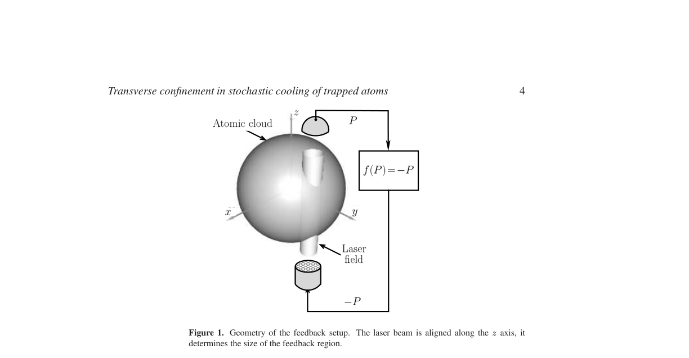
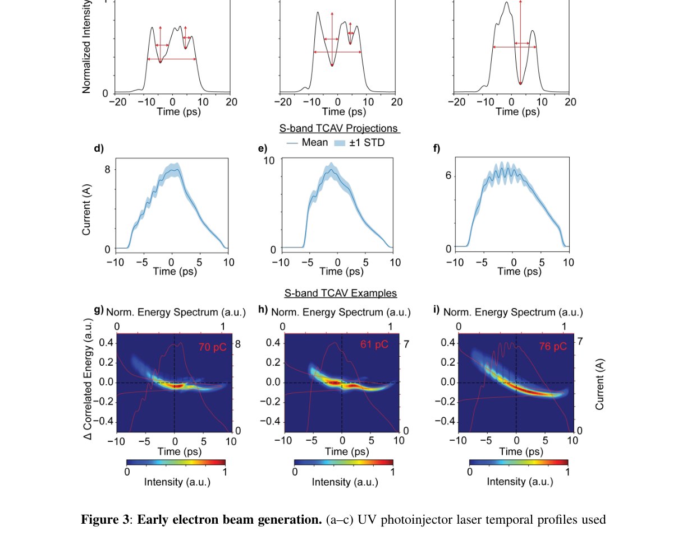

Research Paper Analysis
1. Transverse confinement in stochastic cooling of trapped atoms
Authors: D. Ivanov, S. Wallentowitz
Categories: quant-ph
Published: February 2, 2004
Relevance: 6.0/10
Confidence: 0.80
Suggested Project: Amplified Stochastic Oscillator for the IOTA Ring
Summary
The paper develops an analytical description of stochastic cooling applied to a non‑degenerate trapped atomic gas, explicitly accounting for the transverse confinement imposed by a finite laser‑beam waist. It derives the single‑atom density matrix after a measurement–kick cycle, evaluates the resulting changes in longitudinal and transverse kinetic and potential energies, and identifies heating terms arising from measurement back‑action and atom‑number fluctuations. For a Gaussian beam the authors obtain closed‑form expressions for the energy change as a function of beam size and position, and determine optimal beam parameters that minimize heating and maximize cooling in the non‑degenerate regime.
Key Contributions
- Analytical derivation of the single‑atom density matrix after a stochastic‑cooling step in a finite‑waist laser field.
- Explicit calculation of longitudinal and transverse energy changes, revealing heating from measurement back‑action and atom‑number fluctuations.
- Closed‑form expressions for energy change in terms of Gaussian beam waist size and displacement relative to the trap.
- Identification of optimal beam waist and position that minimize heating and achieve net cooling for a non‑degenerate atomic vapor.
Important Figure

Figure 1. Geometry of the feedback setup. The laser beam is aligned along the z axis, it determines the size of the feedback region. (page 4).
Why It Matters
The paper studies stochastic cooling, a technique closely related to optical stochastic cooling used in accelerator physics. It provides analytical tools and optimization strategies for beam‑size and positioning that are directly applicable to projects involving stochastic cooling theory and beam dynamics, such as the Amplified Stochastic Oscillator project. However, the work is focused on trapped atoms rather than charged particle beams, so the relevance is moderate rather than central.
Links
- Abstract: https://arxiv.org/abs/quant-ph/0402009v1
- PDF: https://arxiv.org/pdf/quant-ph/0402009v1
- Extracted full text: /Users/thomas/Desktop/Agents/research-newsletter-agent/data/markdown/quant-ph_0402009v1.md
2. Advanced Control of Electron Beams: Tailoring X-ray Production with Programmable Laser Shaping
Authors: Jack Hirschman, Randy Lemons, Hao Zhang, Razib Obaid, River Robles, Paris Franz, Benjamin Mencer, Nicole Neveu, Matthew Britton, David Cesar, Nicolas Sudar, Zhen Zhang, Justin Baker, Chad Pennington, Kurtis Borne, Taran Driver, Kirk A. Larsen, Veronica Guo, Yuantao Ding, Gabriel Just, Feng Zhou, James Cryan, Joseph Robinson, Ryan Coffee, Agostino Marinelli, Sergio Carbajo
Categories: physics.acc-ph
Published: March 16, 2026
Relevance: 8.0/10
Confidence: 0.90
Suggested Project: None
Summary
The study demonstrates the first experimental implementation of software‑programmable ultraviolet pulse shaping at the LCLS‑II photoinjector, using a dispersion‑controlled nonlinear synthesis scheme combined with a spatial‑light‑modulator spectral shaper. By imposing user‑defined temporal structures on the drive laser, the authors show that the resulting longitudinal electron‑bunch profile is preserved through acceleration, magnetic compression, and undulator transport, and that the structured current distribution is directly reflected in the temporal profile of the emitted X‑ray pulses, as measured with transverse deflecting cavities. This establishes a source‑level actuator for high‑repetition‑rate free‑electron lasers, enabling adaptive, real‑time control of X‑ray pulse structure.
Key Contributions
- Programmable UV pulse shaping at a high‑repetition‑rate photoinjector using a liquid‑crystal SLM and dispersion‑controlled nonlinear upconversion.
- Demonstration that laser‑imposed temporal microstructure survives acceleration and compression and imprints on the electron bunch longitudinal phase space.
- Experimental evidence of corresponding structured X‑ray emission via X‑band transverse deflecting cavity reconstruction.
- Provision of a fast, software‑controlled upstream control knob suitable for adaptive and autonomous FEL operation.
Important Figure

Figure 3: Early electron beam generation. (a–c) UV photoinjector laser temporal profiles used (page 11).
Why It Matters
The paper directly addresses programmable control of the photoinjector drive laser to shape the electron beam’s longitudinal phase space, which is highly relevant to projects focused on phase‑space manipulation and beam‑quality optimization. While it does not employ reinforcement learning or stochastic cooling, its technical contributions align closely with the goals of the Machine Learning for Photoinjector Beam Quality Enhancement project and provide a foundation for future adaptive control strategies.
Links
- Abstract: https://arxiv.org/abs/2603.15996v1
- PDF: https://arxiv.org/pdf/2603.15996v1
- Extracted full text: /Users/thomas/Desktop/Agents/research-newsletter-agent/data/markdown/2603.15996v1.md
3. High energy cooling
Authors: Valeri Lebedev
Categories: physics.acc-ph
Published: January 22, 2024
Relevance: 8.0/10
Confidence: 0.90
Suggested Project: None
Summary
The paper reviews particle cooling techniques for high‑energy heavy particles, focusing on electron cooling and stochastic cooling. It distinguishes microwave stochastic cooling from its optical extensions—optical stochastic cooling (OSC) and coherent electron cooling (CEC)—which operate in the 30–300 THz range. OSC employs undulators as pickup and kicker elements with an optical amplifier for signal amplification, whereas CEC uses an electron beam for all functions.
Key Contributions
- Clarification of the frequency regimes and operational principles of OSC and CEC as extensions of microwave stochastic cooling.
- Description of the role of undulators and optical amplifiers in OSC.
- Comparison of OSC and CEC in terms of their implementation for high‑energy colliders.
Why It Matters
The paper directly discusses optical stochastic cooling, which is central to the Amplified Stochastic Oscillator project. It provides theoretical context and technical details relevant to pickup‑to‑kicker radiation transport and cooling decrements, aligning closely with the project's goals.
Links
- Abstract: https://arxiv.org/abs/2401.15091v1
- PDF: https://arxiv.org/pdf/2401.15091v1
4. Staged Laser Wakefield Acceleration for Saturated Lasing of Bandwidth-Tunable Free-Electron Lasers from EUV to X-ray
Authors: Hengyuan Xiao, Fei Li, Shuang Liu, Yuchen Jiang, Siqin Ding, Zhi Song, Jianfei Hua, Wei Lu
Categories: physics.acc-ph
Published: March 30, 2026
Relevance: 3.0/10
Confidence: 0.80
Suggested Project: None
Summary
The paper proposes a laser‑wakefield‑accelerator (LWFA) driven free‑electron laser (FEL) scheme that uses staged acceleration to reach multi‑GeV energies while preserving beam quality, and a dual‑chicane beamline to stretch the bunch for EUV lasing and to tailor the energy chirp for broadband operation. Simulations show that 7 GeV, low‑emittance, low‑energy‑spread beams can achieve FEL saturation from EUV to X‑ray wavelengths with bandwidths up to 11 %.
Key Contributions
- Staged LWFA acceleration to multi‑GeV energies with preserved beam quality.
- Dual‑chicane beamline to stretch bunches for EUV slippage and to shape energy chirp for broadband X‑ray modes.
- Demonstration via simulations of FEL saturation across EUV to X‑ray regimes and large bandwidth operation.
- Roadmap for compact, multi‑mode FEL facilities based on plasma acceleration.
- Implications for compact injectors for next‑generation storage‑ring light sources.
Why It Matters
The paper discusses laser‑wakefield acceleration and FEL operation, which are accelerator physics topics but not directly related to the user’s current projects focused on stochastic cooling, reinforcement learning for beam dynamics, or photoinjector machine learning. It provides general insights into compact high‑energy beam generation that could inform future injector designs, yet it does not address the specific goals or methods of the listed projects.
Links
- Abstract: https://arxiv.org/abs/2603.28214v1
- PDF: https://arxiv.org/pdf/2603.28214v1
5. A Single-pass Cr:ZnSe Amplifier for Broadband Infared Undulator Radiation
Authors: M. B. Andorf, V. A. Lebedev, P. Piot
Categories: physics.acc-ph
Published: April 28, 2020
Relevance: 8.5/10
Confidence: 0.90
Suggested Project: Amplified Stochastic Oscillator for the IOTA Ring
Summary
The paper proposes a single‑pass amplifier using a highly doped Cr:ZnSe crystal to boost the pulse energy of undulator radiation emitted by an electron bunch. It models the crystal with a four‑energy‑level system to estimate single‑pass gain and combines numerical calculations with wave‑optics simulations to predict the properties of the amplified undulator wave‑packet, aiming to enhance phase‑space density via optical stochastic cooling.
Key Contributions
- Proposed a Cr:ZnSe crystal‑based single‑pass amplifier for undulator radiation
- Developed a simple four‑energy‑level model to estimate single‑pass gain
- Performed numerical and wave‑optics simulations to predict amplified wave‑packet properties
- Linked amplified radiation to potential improvements in optical stochastic cooling
Why It Matters
The paper directly addresses the use of an optical amplifier to increase undulator radiation for optical stochastic cooling, which is a core goal of the "Amplified Stochastic Oscillator for the IOTA Ring" project. It provides theoretical and simulation results that can inform the design and optimization of the amplifier component in that project.
Links
- Abstract: https://arxiv.org/abs/2004.13223v2
- PDF: https://arxiv.org/pdf/2004.13223v2
6. IOTA (Integrable Optics Test Accelerator): Facility and Experimental Beam Physics Program
Authors: Sergei Antipov, Daniel Broemmelsiek, David Bruhwiler, Dean Edstrom, Elvin Harms, Valery Lebedev, Jerry Leibfritz, Sergei Nagaitsev, Chong-Shik Park, Henryk Piekarz, Philippe Piot, Eric Prebys, Alexander Romanov, Jinhao Ruan, Tanaji Sen, Giulio Stancari, Charles Thangaraj, Randy Thurman-Keup, Alexander Valishev, Vladimir Shiltsev
Categories: physics.acc-ph
Published: December 19, 2016
Relevance: 8.0/10
Confidence: 0.90
Suggested Project: Amplified Stochastic Oscillator for the IOTA Ring
Summary
The paper describes the design, construction status, and research agenda of the Integrable Optics Test Accelerator (IOTA) at Fermilab, a 150‑MeV electron and 70‑MeV/c proton storage ring intended for advanced beam physics experiments. It outlines the facility’s lattice, special integrable optics magnets, electron lenses, and plans for studies of nonlinear beam dynamics, space‑charge compensation, and optical stochastic cooling.
Key Contributions
- Design and parameter specification of the IOTA storage ring for integrable optics experiments
- Implementation strategy for special integrable optics magnets and electron lenses
- Planned experimental program covering nonlinear focusing, space‑charge effects, and optical stochastic cooling
- Timeline and progress update on construction and commissioning
Why It Matters
The paper directly addresses the IOTA facility, which is the core of the Amplified Stochastic Oscillator project. It provides detailed design and experimental plans for optical stochastic cooling and related beam dynamics studies, matching the project’s goals and methods.
Links
- Abstract: https://arxiv.org/abs/1612.06289v1
- PDF: https://arxiv.org/pdf/1612.06289v1